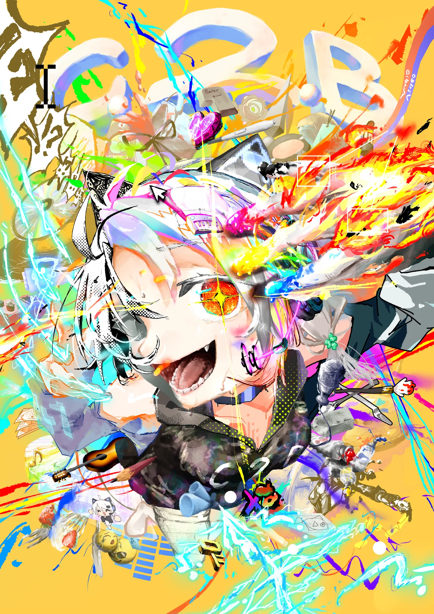
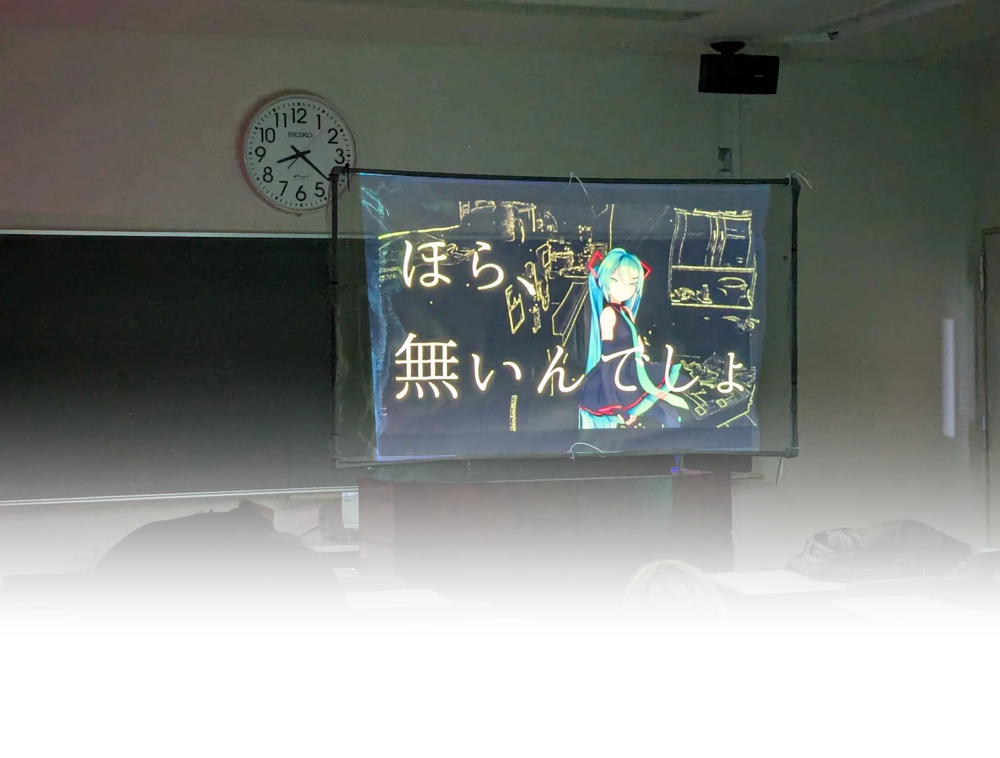
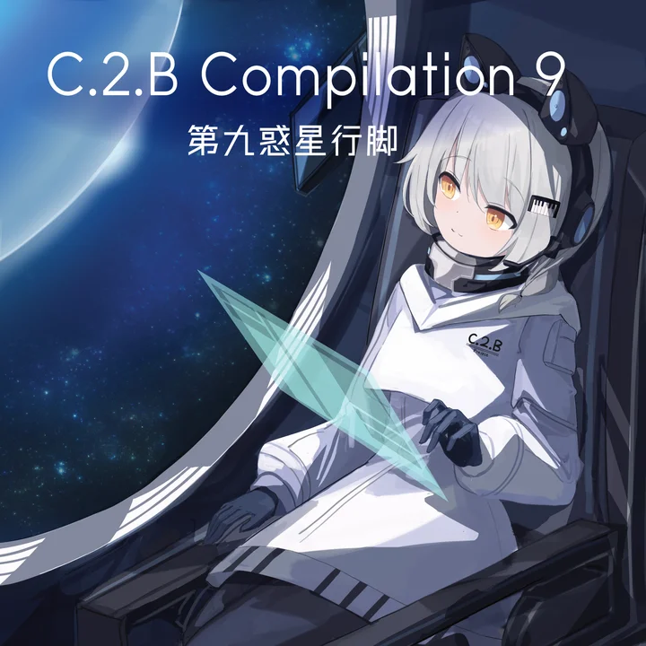
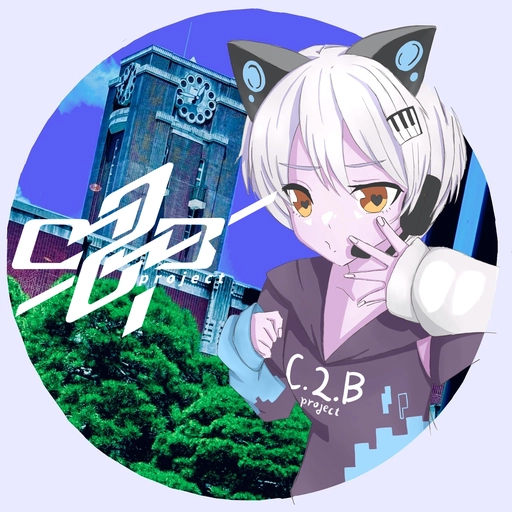

01
脱出ゲーム
教室を使った脱出ゲームです。閉じ込められた空間から、知恵とひらめきで脱出を目指してください！

創作も交流も、ぜんぶ楽しめる4日間！
2026年11月20日(金)〜23日(月・祝)
京都大学吉田キャンパス
人間・環境学研究科棟 地下大講義室B / クスノキ前特設ステージ
初音ミクたちが踊るMMDライブ
今年もC.2.B projectがMMDライブを開催します！
「星」をテーマに、初音ミクたちが多彩な楽曲でステージを彩ります。
日替わりのセットリストでお届けする、光と音の没入型ビジュアルライブです。
上映時間は決まり次第、公式Xアカウントなどでお知らせします。

頭とひらめき、そして自分の絵で楽しむ2つの企画です！
教室を使った脱出ゲームです。閉じ込められた空間から、知恵とひらめきで脱出を目指してください！
あなたが描いたイラストがスクリーンの中で動き出します。自分の絵が主役になるデジタルアート空間を体験できます！
C.2.B project会員の創作物を頒布する即売会を開催します！
ボーカロイド楽曲を含むコンピレーションアルバム、イラスト本、文字本などを頒布予定です。
毎年NFリリース、会員が作成した小説・エッセイなどを集めた合同誌です。
毎年NFリリース、会員が作成したイラストを集めた合同誌です。

毎年NFリリース、会員によるボーカロイド楽曲などを収録した音楽CDです。タイトル: "C.2.B Compilation 9 -第九惑星行脚-"
今年もステージに立ち皆さんの前で踊ります！
ただ踊るだけではなく、中にはコスプレをする子もいるのでぜひ何のキャラクターか当ててみてください♪
見ごたえのある楽しい時間にするので見に来てくださると嬉しいです！最後には毎年恒例のあの曲を…！

MMDライブ・脱出ゲーム・スクリーンアート・即売会にお越しの方はこちら！
踊ってみた.(17) にお越しの方はこちら！
A. 入場料は無料です。ただし、物販には別途料金がかかります。
A. 予約は不要です。当日直接会場にお越しください。
A. 会場内・クスノキ前特設ステージでの写真・動画撮影は可能ですが、無断でのSNS等への投稿はご遠慮ください。
A. MMDライブは日替わりのセットリストで上映します。上映時間は決まり次第、公式Xアカウント（@C2Bproject）でお知らせします。